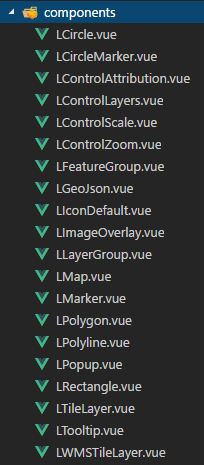
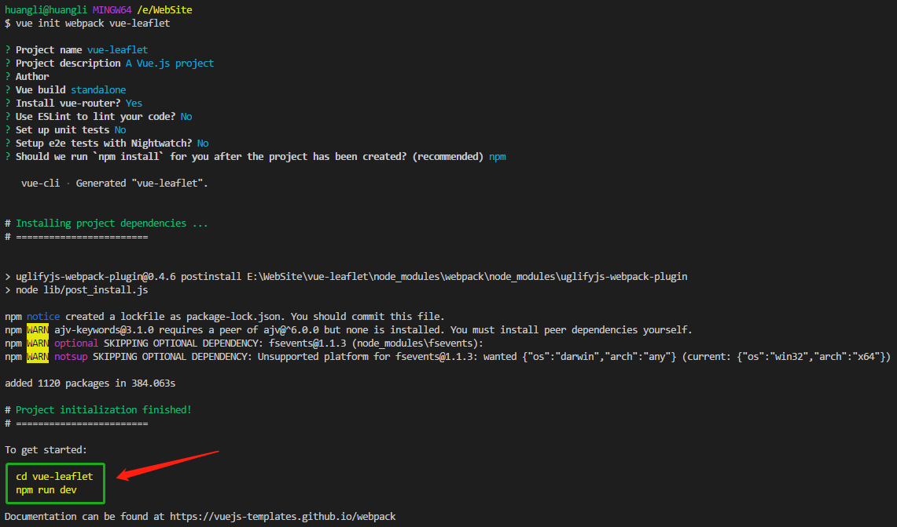
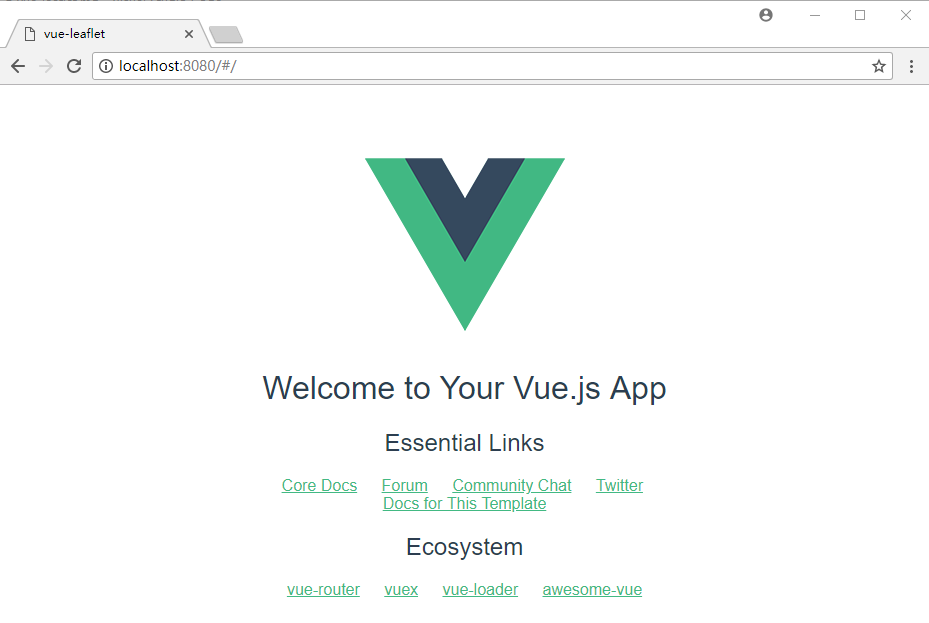
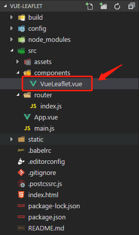
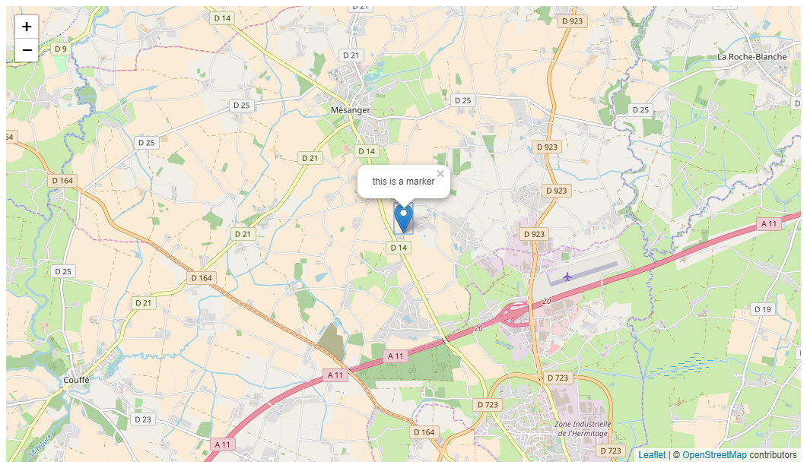

这两天折腾Vue，在GitHub上发现了一个开源项目Vue2Leaflet，Vue2Leaflet是一个Vue框架的JavaScript库，封装了Leaflet，它使构建地图变得更简单。本文简单介绍了如何使用该组件，了解更多可查看作者给出的例子Vue-Leaflet-Demo和作者的JSFiddle - Bouchaud Micka。
Vue2Leaflet封装的组件

Vue 环境
工欲善其事,必先利其器。首先配置好Vue环境。
- 安装 node + git
- 安装 vue-cli脚手架及项目初始化
1 | npm i vue-cli -g |

- 访问localhost:8080，出现如下页面即成功。

安装Vue2Leaflet及使用
1 | npm i vue2-leaflet -S |
新建VueLeaflet.vue
在component文件夹下删除HelloWorld.vue，新建VueLeaflet.vue文件，如下：

1 | <template> |
修改路由
修改index.js，即修改HelloWorld为VueLeaflet(省略了部分代码，后面有完整代码)。1
2
3
4
5
6
7
8
9
10
11import VueLeaflet from '@/components/VueLeaflet'
export default new Router({
routes: [
{
path: '/',
name: 'VueLeaflet',
component: VueLeaflet
}
]
})
添加LMap 组件
1 | <l-map style="width: 100%; height: 600px;" :zoom="zoom" :center="center"> |
引入需要的组件
1 | import { LMap, LTileLayer, LMarker, LPopup } from 'vue2-leaflet'; |
保存后就可以在浏览器里看到地图了，但是看起来乱七八糟的，跟想象中的不一样，是因为没有引入Leaflet的样式文件。
引入 leaflet.css
在main.js文件中添加：1
import 'leaflet/dist/leaflet.css';
添加后，地图是正常显示了，但是你会发现，我明明加了一个marker，为什么没有看到呢？打开控制台就明白了，marker图标没有被正确加载。
修改icon路径
1 | delete L.Icon.Default.prototype._getIconUrl; |
现在打开浏览器看看😁

最终文件
VueLeaflet.vue
1 | <template> |
main.js
1 | // The Vue build version to load with the `import` command |
Vue2Leafet 插件
- vue2-leaflet-markercluster wrapper for MarkerCluster
- vue2-leaflet-tracksymbol wrapper for TrackSymbol
- vue-choropleth to display a choropleth map given a certain GeoJSON
- vue2-leaflet-geosearch wrapper for GeoSearch
- vue2-leaflet-vectorgrid wrapper for VectorGrid to display gridded vector data